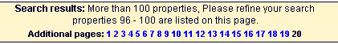
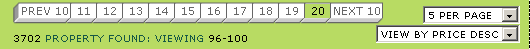

At Emap we often has lots and lots of pages of results, from holidays to concert tickets, and every system had it's own way of implimenting it, all crap.
I had started a module for this, then Leon joined and I got him to do it properly. Data::Page was born, and now you have Data::Pageset which takes it 1 step further (which you don't always need, hence a seperate module).
Data::Pageset uses Data::Page as a base class, so you can access all the methods in Data::Page as well.
Ever seen something like this:

Wondered why they limit it to 20 pages ?
Developer "We didn't have space to put more pages"!
Wouldn't you prefer something like this:

use Data::Pageset;
my $page_set = Data::Pageset->new({
'total_entries' => $search->total_results(),
'entries_per_page' => $form_input->{'per_page'},
'current_page' => $form_input->{'current_page'},
'pages_per_set' => 10,
});
%vals = (
'page_set' => $page_set,
....
);
$tt->process($template, \%vals);
Ok... I guess I can show you that... this is bassed on TT but
all we're doing is calling the methods. It could be used anywhere, even with print statments!
[% IF page_set.previous_set %] <a href="[% url_stub %]¤t_page=[% page_set.previous_set %]">PREV [% page_set.pages_per_set %]</a> - [% END %] [% FOREACH page = page_set.pages_in_set %] [% IF page == page_set.current_page %] <b>[% page %]</b>, [% ELSE %] <a href="[% url_stub %]¤t_page=[% page %]">[% page %]</a>, [% END %] [% END %] [% IF page_set.next_set %] - <a href="[% url_stub %]¤t_page=[% page_set.next_set %]">NEXT [% page_set.pages_per_set %]</a> [% END %]and you'll get something like...
PREV 10 -
11,
12,
13,
14,
15,
16,
17,
18,
19,
20,
- NEXT 10
The designer could even do:
[% page_set.pages_per_set(5) %]
and we'd get something like this:
PREV 5 -
16,
17,
18,
19,
20,
- NEXT 5
print " First page: ", $page_info->first_page, "\n";
print " Last page: ", $page_info->last_page, "\n";
print " Next page: ", $page_info->next_page, "\n";
print " Previous page: ", $page_info->previous_page, "\n";
# Results on current page
print "First entry on page: ", $page_info->first, "\n";
print " Last entry on page: ", $page_info->last, "\n";
# Can add in the pages per set after the object is created
$page_info->pages_per_set($pages_per_set);
print "First page of previous page set: ", $page_info->previous_set, "\n";
print " First page of next page set: ", $page_info->next_set, "\n";
# Print the page numbers of the current set
foreach my $page ($page_info->pages_in_set()) {
if($page == $page_info->current_page()) {
print "$page ";
} else {
print "$page ";
}
}
# This method returns the total number of entries.
print "Entries:", $page_info->total_entries, "\n";
# This method returns the total number of entries per page.
print "Per page:", $page_info->entries_per_page, "\n";
# This method returns the current page number.
print "Page: ", $page_info->current_page, "\n";
# This method returns the previous page number, if one
exists. Otherwise it returns undefined.
if ($page_info->previous_page) {
print "Previous page number: ", $page_info->previous_page, "\n";
}
# This method returns the next page number, if one exists.
Otherwise it returns undefined.
if ($page_info->next_page) {
print "Next page number: ", $page_info->next_page, "\n";
}
# This method takes in an listref, and returns only the values which are on the current page.
@visible_holidays = $page_info->splice(\@holidays);